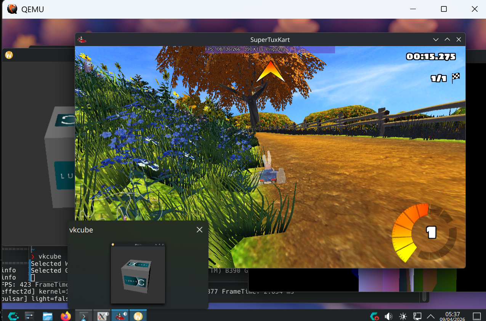

The best way to run desktop Linux on Windows. With real GPU acceleration.
Run Linux VMs with real GPU acceleration. No more software rendering. No more excuses.

CachyOS with KDE Plasma, SuperTuxKart at 423 FPS (Vulkan), and vkcube — all running inside WINQ-EMU on Windows.
WINQ-EMU is the ultimate way to run a full graphical Linux desktop on Windows.
Unlike WSL, you get a complete desktop environment. Unlike other VM software,
you get real Vulkan GPU acceleration. Your Linux VM connects directly to your
host GPU through the Venus protocol — no software rendering, no compromises.
It also fixes WHPX to support -cpu host, which upstream QEMU doesn't do yet.
(But honestly, you should probably just switch to Linux. QEMU is even better there.)
Linux guest apps talk Vulkan to your real GPU through the Venus protocol. Hardware raytracing, compute shaders, the works. Well, mostly the works. It's alpha.
Full CPUID passthrough via WHPX. Your guest sees your actual CPU — AVX-512, hybrid cores, whatever fancy silicon you've got.
Run KDE, GNOME, or any desktop you want. Not a terminal in a window like WSL — a real, full Linux desktop with GPU acceleration.
GPU, sound, network — all virtio. Because paravirtualization is the way. virgl handles OpenGL, Venus handles Vulkan, you handle the snacks.
Zero-copy shared memory between host and guest GPU. Your pixels take the express lane.
All patches are minimal and clean. Fork it, upstream it, frame it and hang it on your wall. I don't mind.
"As a heavy Linux user, I have a great appreciation for how QEMU has allowed me to run a virtual machine which is just as capable as the host, with a fully graphically accelerated desktop. I wanted to bring the same Linux desktop experience to Windows, as I found Hyper-V, WSL, and QEMU in its upstream state to be insufficient. Hopefully the community will run with this and we'll end up with an even better Linux VM experience atop Windows."
SuperTuxKart, Vulkan renderer, default settings. CachyOS on both. Real numbers.
| Platform | FPS | |
|---|---|---|
| WINQ-EMU (Venus) | 410 fps | 👑 |
| WSL2 (CachyOS) | 226 fps |
Nearly 2x faster than WSL. Your mileage may vary. But it'll probably be good mileage.
Run the installer. Click next a few times. You know the drill.
Drop a Linux qcow2 image into the vm folder, or create one in the launcher.
Open WINQ-EMU, pick your settings, hit Launch. That's it.
Everything here is built from git, not stable releases. The QEMU is from rc2, the Mesa drivers are from main, and the whole thing is held together by optimism and a concerning number of late nights. Things might crash. Things might look weird. Your cat might judge you. But honestly? It's already pretty solid for something this experimental. I'm just covering my bases here.
Works everywhere — Wayland and X11. Just run your Vulkan apps. They'll find the GPU.
Works everywhere too. Your desktop compositor uses this by default. It just works™.
Translates GL to Vulkan for potentially better perf. X11/XWayland only —
native Wayland clients won't display. Set MESA_LOADER_DRIVER_OVERRIDE=zink to try it.
EFI boot causes a timing issue that tanks Vulkan to ~5 FPS. Stick with BIOS. I'm looking into it.
Windows 10 or 11 with "Windows Hypervisor Platform" enabled in Windows Features.
Any GPU with Vulkan drivers. Intel, AMD, NVIDIA — I don't discriminate.
A distro with Mesa 24.0+. Fedora 40+, Ubuntu 24.04+, Arch, CachyOS, etc.
This project takes a lot of time, testing, and hardware. If WINQ-EMU saved you from the horrors of software rendering or gave you a real Linux desktop on Windows, consider supporting the work. Donations help fund more hardware testing, upstream contributions, and the occasional mass of mass-produced tokens.
Donate via PayPalEvery bit helps. Even a star on GitHub makes a difference.
Everything is open source. The patches are intentionally minimal for easy upstreaming. If you want to merge any of this into the upstream projects, please do. We'd love that.